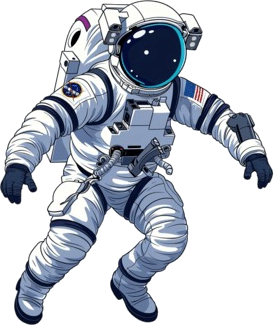

AN INTERACTIVE SPACE EXPLORATION
Their mission ended.
Their mission ended.
Their discoveries
live on.
Travel across the Moon and Mars to meet the machines that changed what we know about space.
NASA Real missions. Remarkable discoveries.

YOUR JOURNEY STARTS HERE
01 / 06SCROLL TO BEGIN ↓
01 / 04
FIRST, MEET YOUR EXPLORER
Who is joining the mission?
Choose your explorer identity to begin your journey.
02 / 04
EXPLORER PROFILE / START
Welcome, Space Explorer!
Every great discovery starts with curiosity.
Choose your character and enter your name.
03 / 04
MISSION CONTROL / DESTINATION SELECT
Where will your story begin?
Choose a destination and uncover the secrets hidden there.
PLANET EQUIPMENT EXPLORER
Explore the forgotten pioneers
Choose a mission marker to uncover its story.
YOUR DISCOVERIES0 / 2
SPACE ECHOES STORYMISSION VIDEO
A STORY INSPIRED BY A REAL NASA MISSION
Hello, Earth.
Discover the story behind this remarkable mission.
After the video, you will answer a short mission quiz and earn XP.
Discover the science
One last challenge, Explorer!
Answer the questions, earn points, and add this story to your discovery log.
QUESTION 1 / 420 XP
Your discovery log.
TOTAL EXPERIENCE0 XP
STORIES DISCOVERED0 / 6
EXPLORERExplorer